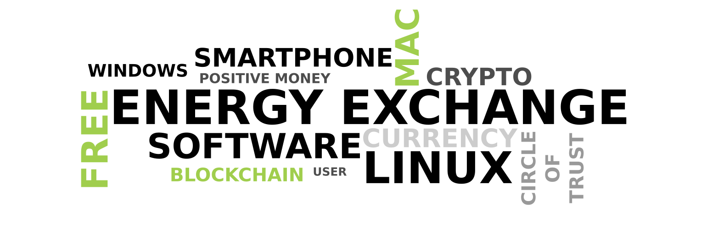

-

- 
Willkommen bei NRG-ExchangeWIR SIND SEHR FROH DAS DU UNS GEFUNDEN HAST
Wir haben die folgende Situation?
Kleingewerbe
Du hast dir ein kleines Geschäft aufgebaut, hast aber nicht genug Kunden. Deine potentiellen Kunden haben nicht genug Geld um für deinen Service zu bezahlen.
Nachbarschaft
In der Nachbarschaft hilft man sich ja gegenseitig. Du kannst dich leicht daran errinnern, wem Du geholfen hast und wer dir noch einen Gefallen schuldet. Aber irgendwann verlierst du den Überblick oder jemand, der dir noch einen Gefallen schuldet oder du ihm, zieht weg. Du hast keine Möglichkeit die Energien noch auszugleichen.
Andere Probleme mit der Nachbarschaft
Denken wir einmal an eine Frisörin, die einem Automechaniker die Haare schneidet. Nehmen wir an, sie fährt kein Auto. Der Automechaniker ist also gar nicht in der Lage die Energien auszugleichen, in dem er ihr Auto repariert. Er muss die Frisören also bar bezahlen. Das wiederrum macht es nötig, das die Frisörin das Geld versteuert.
Steuern zahlen
Versteh mich nicht falsch. Ich habe nichts gegen das Steuernzahlen. Aber lass mir dir etwas erzählen. Jedes Jahr muss die Regierung mehr Schulden aufnehmen, weil sie nicht mal die Zinsen zahlen kann. Und dafür müssen wir immer mehr Steuern zahlen. In Dänemark zahlst man z.B. 51% Einkommenssteuer und zusätzlich noch 25% Mehrwertsteuer. Dem Dänen bleiben also gerade mal 24% seines Einkommens. Der grösste Teil deines Einkommens wird verwendet um Staatsschulden zu begleichen.
Finanzkrise
Aber da sind noch grössere Probleme. Erinnerst du dich an Zypern 2013? Dort wurden die Reichen einfach enteignet. Und auserdem waren die Banken nicht in der Lage, Geld an ihre Kunden auszuzahlen. Wollen wir den Banken wirklich immer noch Vertrauen schenken?
Möchtest du wissen, wie man diese Situation lösen kann? Dann les weiter.
NRG-Exchange,
eine neue Währung von dir selbst erschaffen.
Lösung
In Deutschland hat ein Mann die Idee der Minutos entwickelt.
Minutos sind eine Art von Geld, die jeder selbst erstellen kann. Nimm einfach ein Blatt Papier, schreibe darauf, welche Dienstleistung du anbieten möchtest und für wie viele Minuten du diese Dienstleistung erbringen würdest. Unterschreibe das Blatt. Dieses Geld hat einen realen Gegenwert, da es durch eine konkrete Leistung gedeckt ist. In einer Finanzkrise hätten Banknoten wenig Wert, während Minutos für echte Dienste stehen.
Nachteile
Die Minutos funktionieren schon heute als Zahlungsmittel, allerdings haben sie einige Nachteile. Würdest du mehrere Stunden reisen, um einen dieser Minutos einzulösen, wenn der Unterzeichner weit entfernt wohnt? Wahrscheinlich nicht. Daher werden in der Regel nur Minutos von vertrauten Personen in der Nähe akzeptiert. Außerdem lassen sich Minutos nicht zerteilen; wenn du z.B. 3 Minutos zahlen musst, aber nur einen 60-Minuto hast, gibt es keine kleinere Einheit.
Lösung
Um diese Herausforderungen zu umgehen, können wir moderne Technologien wie Computer und Smartphones nutzen. Die Idee ist, eine Kryptowährung namens NRG (Energy) zu schaffen, zusammen mit einer App namens NRG-Exchange. Diese App ermöglicht es, eigenes Geld zu erschaffen und für Zahlungen zu nutzen. Sie erlaubt auch das Teilen von Minutos in kleinere Einheiten.
Gegenargument
Man könnte nun argumentieren, dass man durch die Möglichkeit, jederzeit neue Minutos zu erstellen, theoretisch einen Schuldenberg aufbauen könnte.
Schließlich könnte es passieren, dass irgendwann niemand mehr die Minutos akzeptiert und die Besitzer ihre Minutos einlösen möchten,
wodurch eine große Arbeitsverpflichtung entstehen könnte.
Das Problem besteht, aber...
...warum sollte man überhaupt so viele Minutos erzeugen? Angenommen, du erhältst weder Lohn noch Arbeitslosengeld, weil du dich dem Arbeitsmarkt in der jetzigen Form
nicht zur Verfügung stellen möchtest. Ein plausibler Grund könnte sein, dass du nicht die politischen Entscheidungen deiner Regierung mitfinanzieren möchtest,
indem du Steuern zahlst, da dies indirekt auch Kriege unterstützt.
In dieser Situation kannst du wie folgt vorgehen: Erstelle zunächst einen Minuto, um in den nächsten Wochen finanzielle Mittel für deine Grundbedürfnisse zu sichern.
Nutze die Zeit, um dir Gedanken darüber zu machen, welche Dienstleistungen du anderen in deiner Region anbieten kannst.
Beispiele könnten Massagen, Kunst, Musik oder Hilfe für Senioren sein. Es geht darum, deine Fähigkeiten und Talente zu nutzen und anzubieten.
Wenn du weißt, was du tun möchtest, kannst du in einem Netzwerk wie Kleinanzeigen oder einem regionalen Portal inserieren und deine Dienste gegen NRG (oder Minutos) anbieten.
Es ist wichtig zu betonen, dass du keine Rechnungen ausstellst, nichts verkaufst und keine Geschenke machst. Diese private, nicht-gewerbliche Form der Hilfeleistung
sollte steuerlich unbedenklich sein.
Sobald du selbst NRG (oder Minutos) von anderen Freunden erhältst, entfällt die Notwendigkeit, neue Minutos zu erstellen.
So sparst du dir Steuern, Zinsen und Kreditgebühren und kannst deine Dienste günstiger als gewerbliche Anbieter anbieten.
Zudem wirst du weniger arbeiten müssen, da dein Lebensstil auf Selbstversorgung und Minimalismus ausgerichtet ist.
Stellen wir uns einmal vor, wie viel weniger Geld man eigentlich zum Leben braucht, wenn man sich auf das Wesentliche konzentriert. Viele Ausgaben entstehen nur, weil man den teuren Lebensstandard mit teuren Autos, großen Häusern und ständigen Konsumwünschen aufrechterhalten möchte. Doch was wäre, wenn wir uns fragen: Wie viel ist wirklich nötig, um ein gutes und sorgenfreies Leben zu führen?
Ein Beispiel: Ich zahle nur 320 € Miete im Monat, da ich nicht in einer teuren Innenstadtlage wohnen muss. So spare ich nicht nur an der Miete, sondern kann auch auf ein Auto verzichten und nutze stattdessen das Fahrrad – was nicht nur Geld spart, sondern auch die Umwelt schont. Die Ausgaben für Lebensmittel belaufen sich auf etwa 300 € monatlich, weil ich mich auf regionale Produkte konzentriere und auf Qualität achte. Für alle notwendigen Ausgaben komme ich so auf etwa 700 € pro Monat.
Wenn ich also für eine Stunde Arbeit 30 € erhalte – zum Beispiel für eine Massage, die ich anbiete – brauche ich im Monat nur etwa 23 Stunden zu arbeiten, um meinen Lebensunterhalt zu decken. Das lässt mir mehr Zeit für die Dinge, die mir wirklich Freude bereiten und die ich aus Überzeugung tue, ohne ständig das Gefühl zu haben, für Konsum oder Statussymbole arbeiten zu müssen.
So eine Rechnung mag im ersten Moment ungewöhnlich wirken, aber sie zeigt: Ein gutes, erfülltes Leben muss nicht teuer sein. Indem ich meine Ausgaben gezielt reduziere, brauche ich weniger Geld und habe mehr Freiheit. Stell dir vor, was das für deine eigene Lebensqualität bedeuten könnte!
Web of Trust
Falls du NRG weltweit nutzen möchtest, wird ein "Web of Trust" notwendig. Stellen wir uns vor, Person A kennt und vertraut Person B, und B kennt und vertraut Person C. A und C können jedoch nicht direkt handeln, da sie sich nicht kennen. Mithilfe der App kann dennoch ein indirekter Austausch erfolgen. Die NRG von A könnte zuerst an B gehen und dann von B zu C gelangen. So ermöglicht das System Zahlungen auch ohne direkte Vertrauensbeziehungen.
Über Distanzen bezahlen
Bei einer größeren Verbreitung von NRG könnte auch über große Entfernungen bezahlt werden. Ein Beispiel: Eine Person in Hamburg möchte eine Person in München bezahlen. Die NRG werden schrittweise über Bekannte in Städten wie Hannover, Kassel, Würzburg und Nürnberg übertragen, bis die Münchner Person erreicht ist. So wird eines Tages auch globaler Austausch möglich sein.
NRG-Exchange,
eine Lösung um Finanzkrisen zu vermeiden.
Möchtest du gerne dabei helfen?
Zur Zeit ist dies lediglich nur eine Idee. Wir haben gerade erst angefangen, darüber nachzudenken. Wenn du gerne helfen möchtest, dann lass es uns wissen. Wir brauchen Leute mit Ideen, Softwareentwickler, Menschen die diese Ideen weitergeben möchten, Leute die die Lösung später testen, Menschen die mit Spenden helfen wollen usw.